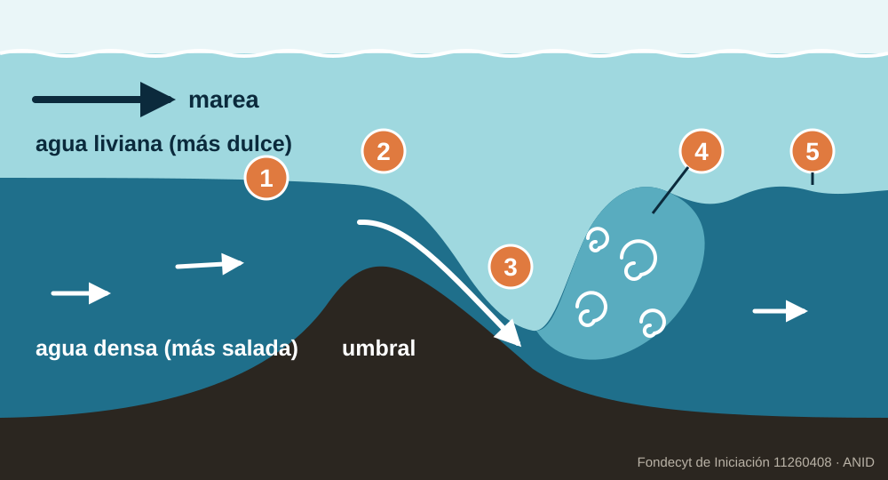

Míralo en tu casa
Abre la llave del lavaplatos: alrededor del chorro el agua corre delgada y rápida, y más allá forma un anillo donde se levanta de golpe. Ese anillo es un salto hidráulico. El del mar es igual, pero ocurre entre dos capas de agua.
Nota corta N° 1
Bajo la superficie del mar, el agua también puede saltar. No se ve desde un bote, pero mezcla el océano.
En el Mar Interior de Chiloé el agua está ordenada en capas: arriba la más liviana, con más agua dulce de ríos y lluvia, y abajo la más densa y salada. Cuando la marea empuja esas capas sobre un cerro submarino, llamado umbral, pasa algo parecido a un río que cae por una cascada, pero escondido bajo la superficie.

Abre la llave del lavaplatos: alrededor del chorro el agua corre delgada y rápida, y más allá forma un anillo donde se levanta de golpe. Ese anillo es un salto hidráulico. El del mar es igual, pero ocurre entre dos capas de agua.
La mezcla del salto lleva oxígeno hacia el fondo y nutrientes hacia la luz. También controla cuánta agua se intercambia entre las cuencas a cada lado del canal.
En el Canal Desertores, el salto es más intenso en las mareas grandes (sicigia). Los modelos comunes simplifican el movimiento vertical del agua; nosotros probamos un modelo que lo calcula completo, para ver cuánto cambia el resultado.
Juega en el Laboratorio Volver a Difusión
Para saber más: Artal et al. (2026), Estuarine, Coastal and Shelf Science.